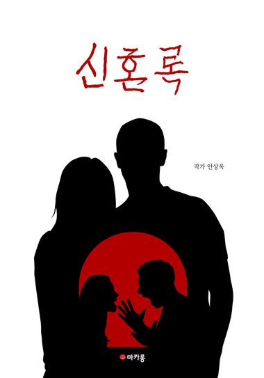
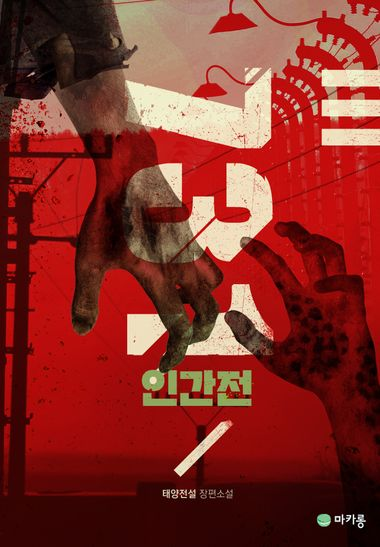
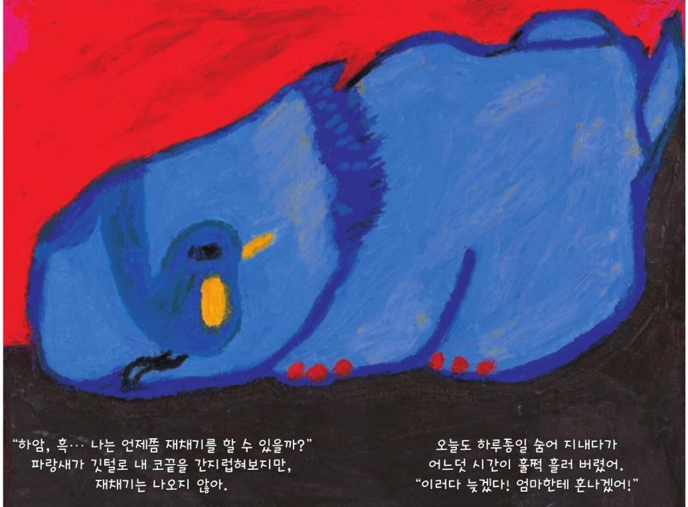

5F · NOVELS & PICTURE BOOKS
소설 · 그림책
모든 영화의 원작이 되는 층. 「인간 4부작」이 여기서 시작합니다.
NOVEL노인의 시대웹소설 · 「인간 4부작」
노인의 시대
- 2024 제2회 대전콘텐츠코리아랩 웹소설 크리에이트 선정
- 영화 3부작 『노인의 시대』의 원작 — 기획전에서 이어집니다



공룡소
- 2023 아르코 〈창작의 과정〉 선정
- 2024 전주출판학교 선정
- 코에 뿔이 없고 머리에 뿔이 난 코뿔소 아이 이야기
더 보기
단편소설
수학여행문학광장 신인상단편소설
내 아들의 세월소설미학 신인상2023 · 단편소설
3류 SF 소설한국과학창의재단 과학스토리텔러 선정연작
「인간 4부작」『인간전』(1940년대) → 『인간시절』(2045) → 『노인의 시대』 → 「인간 탈출」 — 누군가의 몸이 재료가 되는 세계의 연대기다른 층으로